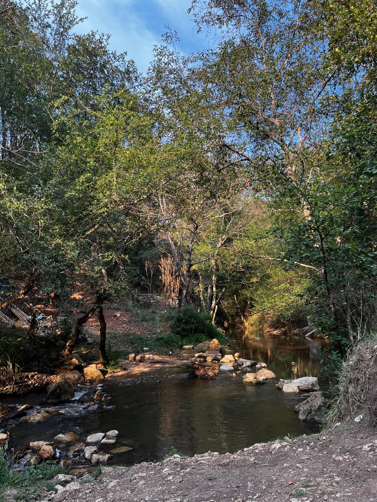

Las Canastas
- San crsitobal es una de sus calles empedradas, sus edificios coloniales, sus dos andadores turísticos. Realmente es una ciudad linda para visitar.
Lo que pocos viajeros conocen es que a solo unos minutos caminando desde el "zócalo", se encuentra un paraje lindísimo al lado del río que corre por la ciudad.
"Las Canastas" es un parque público, al que puede llegarse caminando siempre al este desde el centro de San Cristobal. El sendero inicia con una serie de pinos que recuerdan bosques idílicos en Alemania. La temperatura fresca y el olor a leña te acompañarán en todo tu recorrido.
Experias de turistas
 |
|  |
- Con el sonido de las hojas rompiéndose bajo tus pies, llegarás al puente colgante. El río pasará por debajo y seguramente te encontrarás con las mujeres locales lavando ropa o con chicos jugando en el agua
La experiencia de salir de la ciudad y tomar un respiro en un sitio lleno de cabras, ardillas, pinos y arbustos pequeños es realmente relajante.
- Lo mejor que puedes hacer es llevar un bocadillo y un termo con café y sentarte a leer un buen libro con el olor a pino y el clima fresco del lugar.Un lugar realmente recomendado para todo viajero que visite San Cristóbal de las Casas.
- Canastas
- Se encuentra en la carretera del periferico norte, por la colonia de Ciudad Hidalgo, San Nicolas, 29254
Cabe recalcar que no tienen nada dispible para vender ya que es un parque ecoturistico, es un lugar hermoso para poder descansar y relajarse en medio de los arobles acompañado de un hermoso rio.